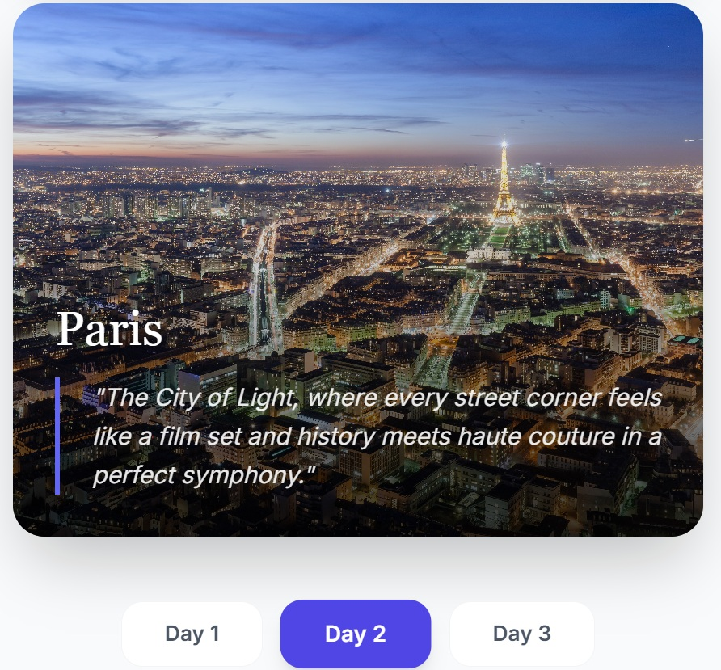
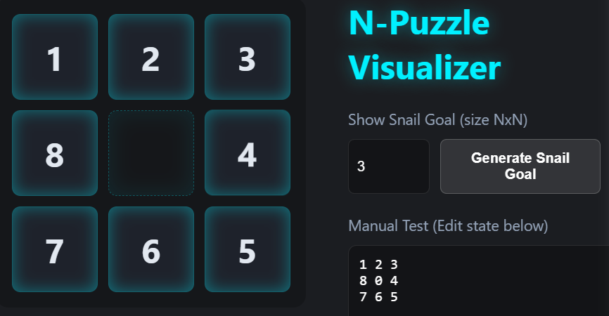
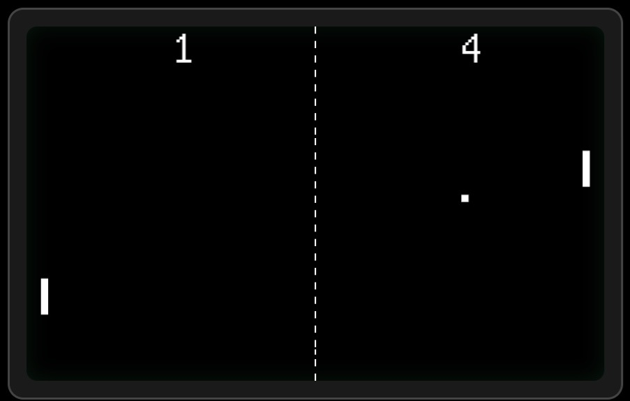
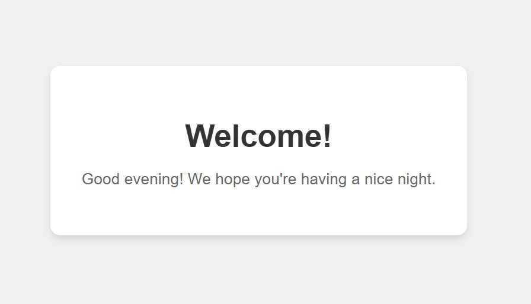
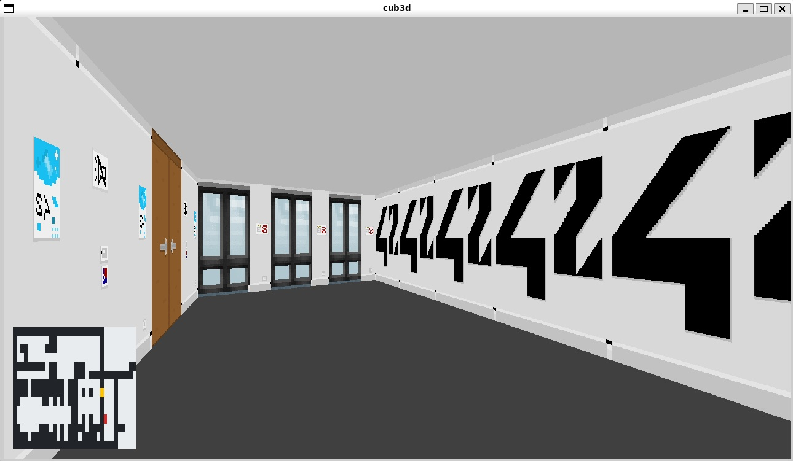
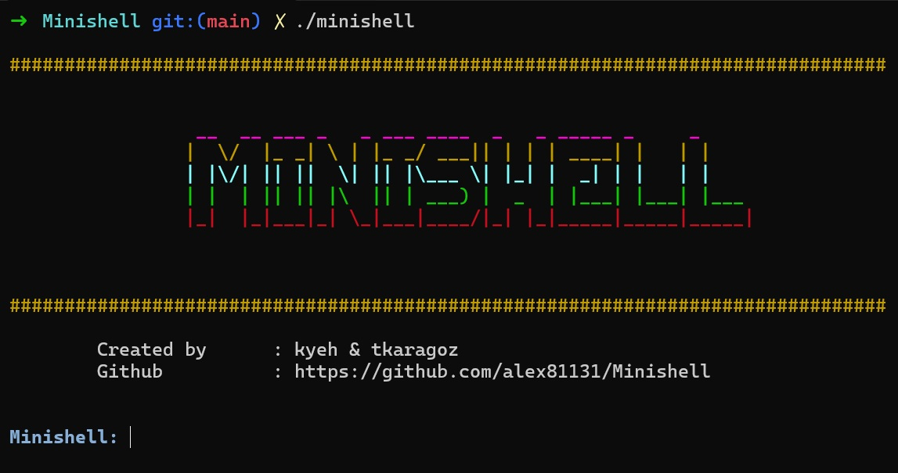
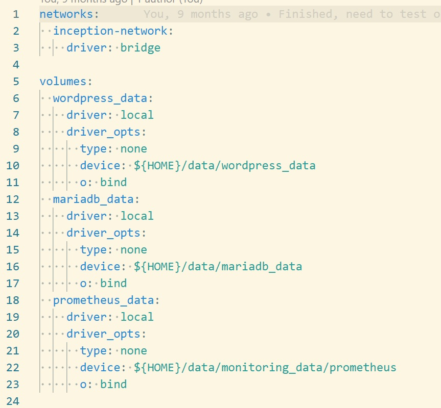

A smart travel assistant powered by Google Gemini AI. Built with React 19, it generates personalized 3-day itineraries and city visuals using advanced Prompt Engineering and asynchronous API integration.
Tech: React 19, Gemini AI, Vite, TypeScript, Tailwind CSS

An A* search algorithm implementation in C++ to solve N-Puzzle configurations using various heuristics (Manhattan, Linear Conflict). Includes a fully static Web Visualizer.
Tech: C++, A* Algorithm, Heuristic Search, HTML/JS

A real-time multiplayer Pong game with user authentication, chat system, and matchmaking. Built
with NestJS backend and modern frontend stack.
Tech: TypeScript, Node.js (Fastify), SQLite, Docker, Avalanche Blockchain

A fully functional HTTP/1.1 server written in C++98 from scratch, supporting multiple
simultaneous connections, CGI scripts, and file uploads.
Tech: C++98, HTTP Protocol, Socket Programming, CGI

A 3D maze game using raycasting technique inspired by Wolfenstein 3D. Implements texture mapping,
sprite rendering, and collision detection.
Tech: C, Raycasting Algorithm, MinilibX, Graphics Programming

A Unix shell implementation supporting pipes, redirections, environment variables, built-in
commands, and signal handling.
Tech: C, Unix System Calls, Process Management, Bash

Containerized infrastructure project featuring WordPress, MariaDB, and Nginx with custom
Dockerfiles, secure networking, and volume management.
Tech: Docker, Docker Compose, Nginx, MariaDB, WordPress
Implementation of the dining philosophers problem using threads and mutexes, demonstrating
concurrent programming and deadlock prevention.
Tech: C, Multithreading, Mutexes, Synchronization